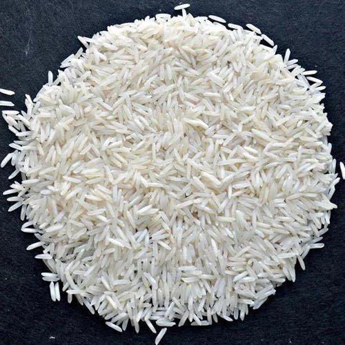
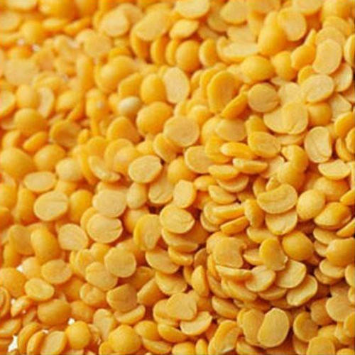
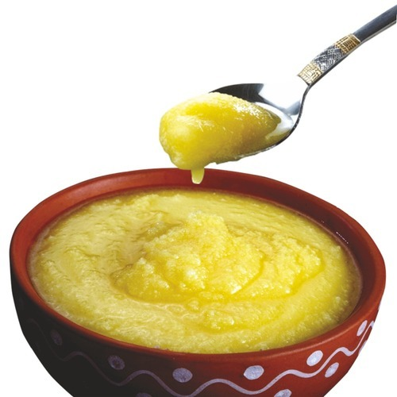
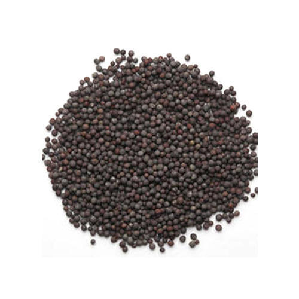
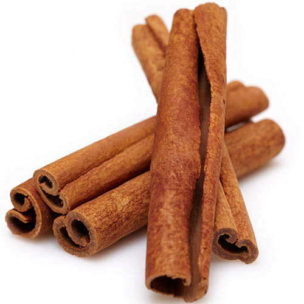
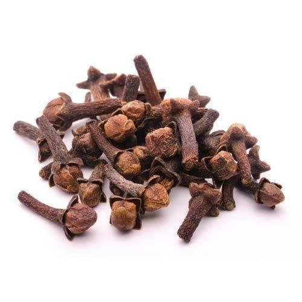
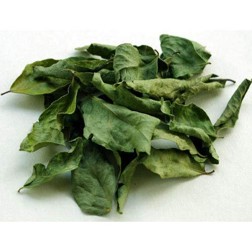
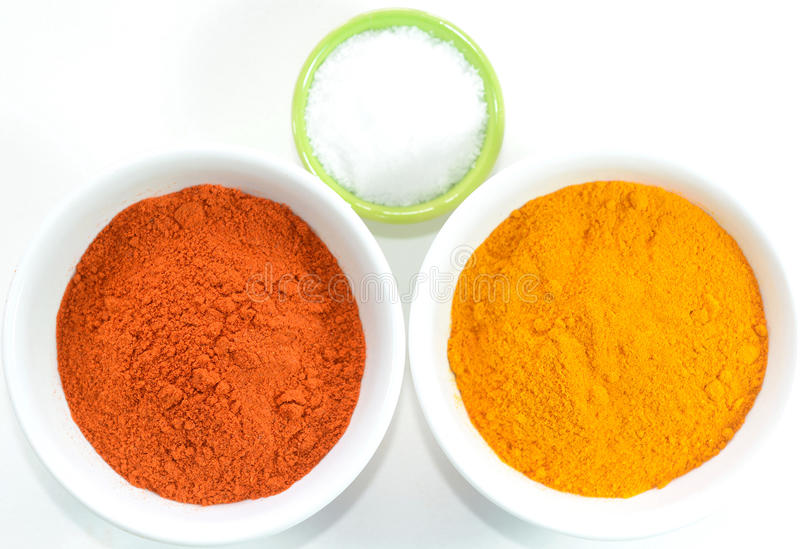

⅔ cup long-grain white Rice

⅓ cup yellow split toor-dal

2 tablespoons ghee

½ teaspoon mustard seeds

1 small cinnamon stick

2 green cardamom pods

1 whole cloves

1 sprig curry leaves (optional)

½ teaspoon kosher salt, plus more to taste
¼ teaspoon red chile powder
¼ teaspoon turmeric powder